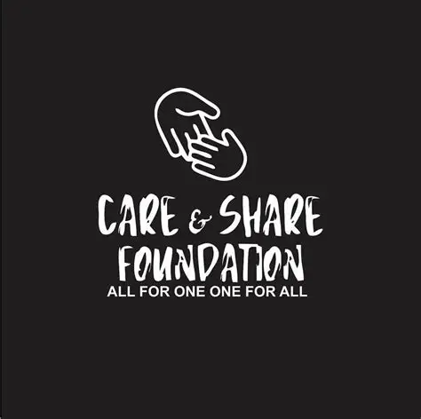

Meet Our Team
John Doe
Founder & Director
Jane Smith
Programs Coordinator
Mary Khumalo
Community Outreach
Peter Mokoena
Volunteer Coordinator
Foundation
Learn more about our mission, vision, and the people behind Care & Share Foundation.
Founded in 2015, Care & Share Foundation is a community-driven non-profit organization dedicated to helping underprivileged individuals and elderly people. The foundation's work extends into schools, where it provides essential resources such as school shoes, uniforms, stationery, and other learning materials to children in need.
In addition to educational support, the organization regularly distributes food parcels, blankets, and hygiene supplies to elderly residents and struggling families. Through partnerships with donors, volunteers, and local businesses, Care & Share Foundation has built a reputation for delivering practical, impactful assistance that uplifts the community.

To restore dignity, opportunity, and hope by providing essential supplies, educational resources, and community support to those in need.
To create a compassionate society where every child has the tools to learn and every elderly person is cared for with respect.
We act with empathy and kindness towards all those we serve.
We operate with transparency, honesty, and accountability.
We believe in the power of working together to create change.
We treat every individual with respect and uphold their human dignity.
Founder & Director
Programs Coordinator
Community Outreach
Volunteer Coordinator